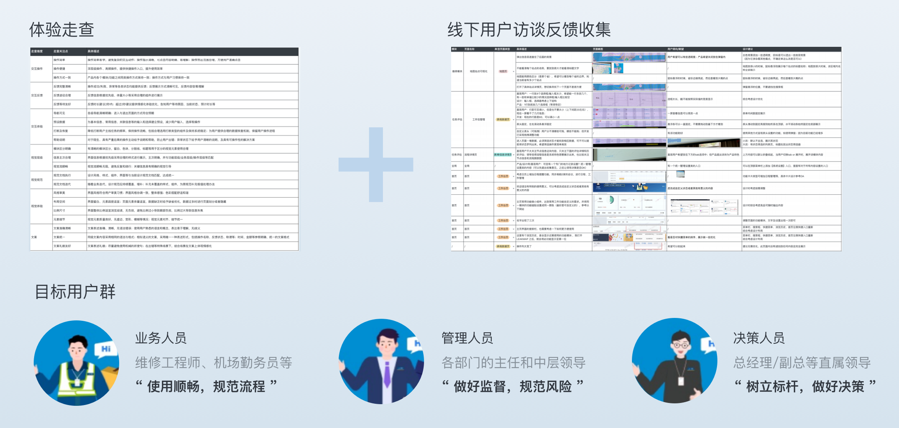
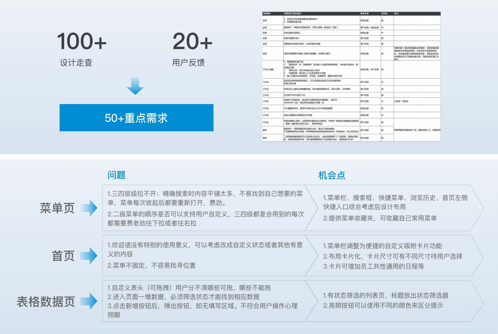
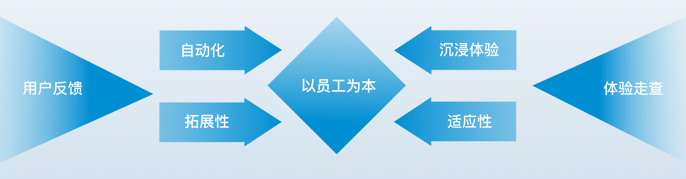
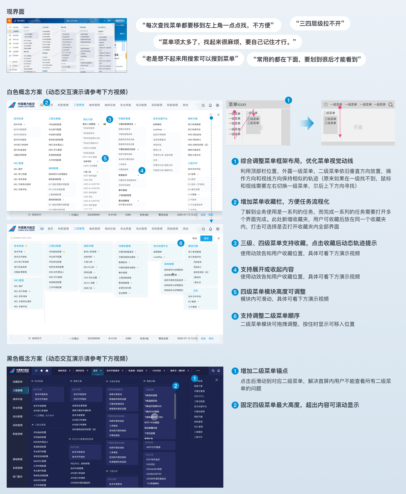
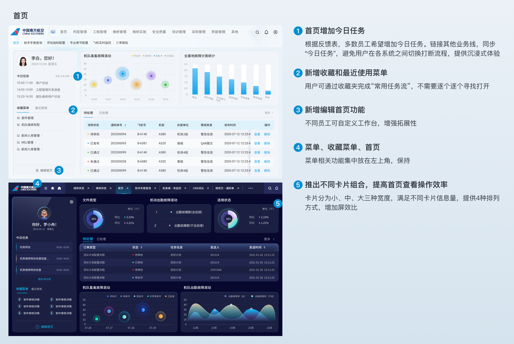
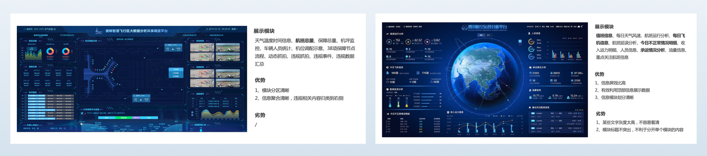
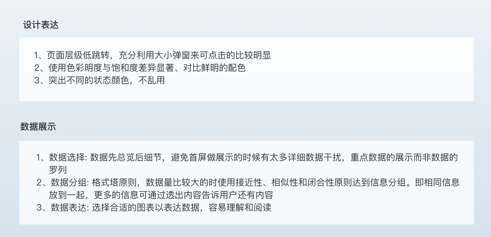
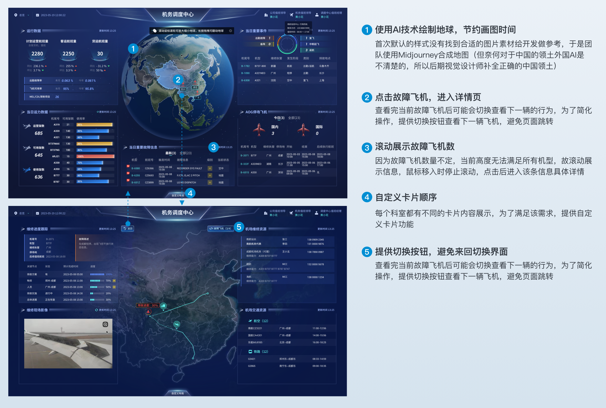
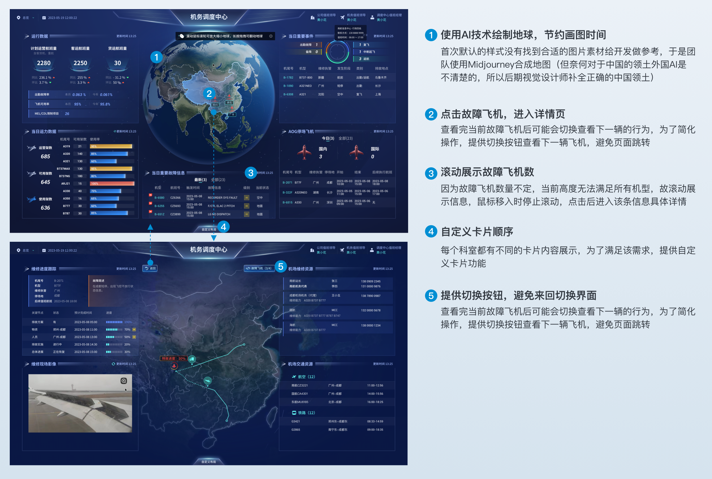

项目概况 overview
“以人为本，提升员工体验”是某航提出的理念，“为人服务”是设计的基本出发点。随着效率数字办公的推行，外加使用体验改善呼声愈发明显，我们被委托设计以达到工程效率的提高，改善员工的使用体验。
本次的设计挑战是：1、领导层对于视觉风格的态度摇摆导致方案未能如期确定，后面通过邀请领导参与风格倾向探索以此敲定；2、大屏设计的动效开发落地一度遇到挑战，因为不能直接输出json格式，某些动效还原度不高，后来通过axure制作动效，导出axure的代码让开发参考，外加在动效演示文件中备注动效关键实现信息如fps和切图综合解决还原度问题。
产品调研 Research
为了更好的了解目前人员的使用习惯和功能诉求，我们通过线下用户反馈和体验走查来发现用户痛点和困扰点，提炼出潜在问题。团队内也根据线下沟通结果，对使用角色建立统一的用户角色认识。
需求分析 Analysis
全方位调研与收集用户需求，参与各部门需求沟通会议，并汇总线上用户反馈、历史需求等，结合业务规划与诉求进行需求优先级划分，最终确定50+条重点需求，进行重点优化
设计理念 Design keys
整合和优化整个产品使用的各个环节，实现对流程的全面掌控。并且能够随着业务需求的不断增长和变化不断延伸。强调自动化、适应性、优化流程、沉浸式体验和可拓展性的特点，使产品更智能更具延伸性+条重点需求，进行重点优化
菜单框架设计 Navigation redesign
概念方案阶段，我们提供了两套黑色、白色不同的视觉交互方案，让员工和领导使用感受，侧面进一步验证方案可行性。最终交互上选择了白色版本。因为出过几版白色视觉方案，但是迟迟未能定下，最后邀请领导用户参与进行设计风格方向甄别，最后颜色上保留黑白两套，选择替换皮肤功能，让用户选择。

重点页面设计 Key pages Design

大屏设计 Visual data design for huge screen
竞品分析 Competitive product analysisw
罗列直接和间接竞品，分析其优点劣势，综合运用到方案中
大屏设计要点 design guideline for visual data
设计亮点 Advatanges
 

 返回顶部
返回顶部